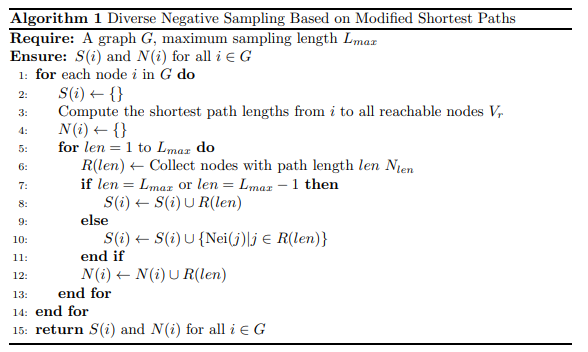

<!DOCTYPE html>


  <html lang="en">
    

    <head>
      <meta charset="utf-8" />
        
      <meta
        name="viewport"
        content="width=device-width, initial-scale=1, maximum-scale=1"
      />
      <title>RW-NSGCN：通过负采样进行结构性攻击的稳健方法 |  小熊的小站</title>
  <meta name="generator" content="hexo-theme-ayer">
      
      <link rel="shortcut icon" href="/favicon.ico" />
       
<link rel="stylesheet" href="/dist/main.css">

      
<link rel="stylesheet" href="/css/fonts/remixicon.css">

      
<link rel="stylesheet" href="/css/custom.css">
 
      <script src="https://cdn.staticfile.org/pace/1.2.4/pace.min.js"></script>
       

<script type="text/javascript">
(function(i,s,o,g,r,a,m){i['GoogleAnalyticsObject']=r;i[r]=i[r]||function(){
(i[r].q=i[r].q||[]).push(arguments)},i[r].l=1*new Date();a=s.createElement(o),
m=s.getElementsByTagName(o)[0];a.async=1;a.src=g;m.parentNode.insertBefore(a,m)
})(window,document,'script','//www.google-analytics.com/analytics.js','ga');

ga('create', 'UA-228563528-1', 'auto');
ga('send', 'pageview');

</script>


 
<script>
var _hmt = _hmt || [];
(function() {
	var hm = document.createElement("script");
	hm.src = "https://hm.baidu.com/hm.js?71ee62302f36ca8f840077a641705255";
	var s = document.getElementsByTagName("script")[0]; 
	s.parentNode.insertBefore(hm, s);
})();
</script>


      <link
        rel="stylesheet"
        href="https://cdn.jsdelivr.net/npm/@sweetalert2/theme-bulma@5.0.1/bulma.min.css"
      />
      <script src="https://cdn.jsdelivr.net/npm/sweetalert2@11.0.19/dist/sweetalert2.min.js"></script>

      <!-- mermaid -->
      
      <style>
        .swal2-styled.swal2-confirm {
          font-size: 1.6rem;
        }
      </style>
    </head>
  </html>
</html>


<body>
  <div id="app">
    
      
    <main class="content on">
      <section class="outer">
  <article
  id="post-20240814"
  class="article article-type-post"
  itemscope
  itemprop="blogPost"
  data-scroll-reveal
>
  <div class="article-inner">
    
    <header class="article-header">
       
<h1 class="article-title sea-center" style="border-left:0" itemprop="name">
  RW-NSGCN：通过负采样进行结构性攻击的稳健方法
</h1>
 

      
    </header>
     
    <div class="article-meta">
      <a href="/2024/20240814/" class="article-date">
  <time datetime="2024-08-14T09:13:12.000Z" itemprop="datePublished">2024-08-14</time>
</a>   
<div class="word_count">
    <span class="post-time">
        <span class="post-meta-item-icon">
            <i class="ri-quill-pen-line"></i>
            <span class="post-meta-item-text"> Word count:</span>
            <span class="post-count">1.7k</span>
        </span>
    </span>

    <span class="post-time">
        &nbsp; | &nbsp;
        <span class="post-meta-item-icon">
            <i class="ri-book-open-line"></i>
            <span class="post-meta-item-text"> Reading time≈</span>
            <span class="post-count">6 min</span>
        </span>
    </span>
</div>
 
    </div>
      
    <div class="tocbot"></div>


  
    <div class="article-entry" itemprop="articleBody">
       
  <link rel="stylesheet" type="text&#x2F;css" href="https://cdn.jsdelivr.net/npm/hexo-tag-hint@0.3.1/dist/hexo-tag-hint.min.css"><p><a target="_blank" rel="noopener" href="https://arxiv.org/abs/2408.06665">论文地址</a></p>
<p>图结构网络通常包含拓扑扰动和权重扰动形式的潜在噪声和攻击，这可能导致 GNN 的分类性能下降。为了提高模型的鲁棒性，该论文提出了一种新方法：随机游走负采样图卷积网络（RW-NSGCN）。具体来说，RW-NSGCN 集成了用于负采样的随机游走（RWR）和 PageRank（PGR）算法，并采用基于行列式点过程（DPP）的 GCN 进行卷积运算。 RWR 利用全局和局部信息来管理噪声和局部变化，而 PGR 评估节点重要性以稳定拓扑结构。基于 DPP 的 GCN 确保负样本之间的多样性，并聚合其特征以产生鲁棒的节点嵌入，从而提高分类性能。</p>
<hr>
<span id="more"></span>

<h2 id="动机"><a href="#动机" class="headerlink" title="动机"></a>动机</h2><p>目前的方法主要集中于聚合来自邻居的数据风险评估和模式识别的节点，其忽略来自非相邻节点的信息，这会间接影响网络的整体流量和权重分布。这种局部视角限制了它们响应拓扑变化和重量分布波动的能力。因此，理解非邻居节点之间复杂的关系对于开发更准确的分类模型至关重要。</p>
<p>一些研究，如SDGCN [ <a target="_blank" rel="noopener" href="https://arxiv.org/html/2408.06665v1#bib.bib25">25</a> ] ，引入了负采样机制，但其随机负采样方法未能充分利用节点和全局结构信息的重要性。因此，这些方法捕获非相邻节点之间复杂关系的能力有限，阻碍了对网络内节点全局影响力的准确评估。这反过来又影响节点表示和模型的整体稳定性。</p>
<p><strong>拓扑扰动：</strong>这种攻击有选择地删除关键边缘，加剧图网络内自然发生的拓扑变化。它模拟极端情况下可能发生的碎片化和连接中断，旨在评估模型在面临重大结构扰动时的表现，并评估其处理现实网络复杂变化的能力。</p>
<p><strong>权重扰动：</strong>这种攻击会修改边权重或引入随机噪声，以放大图中边权重的现有波动。该方法通过模拟极端权重扰动，评估模型处理信息流路径变化和节点影响力变化的鲁棒性，保证模型在动态环境下的可靠性。</p>
<h2 id="方法"><a href="#方法" class="headerlink" title="方法"></a>方法</h2><h3 id="负样本的选取"><a href="#负样本的选取" class="headerlink" title="负样本的选取"></a>负样本的选取</h3><p>首先，通过计算最短路径长度$d(v_i,v_j)$在节点对之间，我们可以确定两个节点之间的关系链长度。然后，我们为每个节点生成一组可达节点$v_i$在不同的路径长度$l:$<br>$$\mathcal{N}<em>{l}(v</em>{i})={v_{j}|d(v_{i},v_{j})=l}$$<br>此步骤有助于识别与节点具有特定路径关系的节点集。</p>
<p></p>
<p>$$s_{ij}=\beta\cdot(1-\alpha)\left[(\mathbf{I}-\alpha\mathbf{P})^{-1}\mathbf{e}_i\right]_j+(1-\beta)\left[\alpha\mathbf{P}(\alpha\mathbf{P}\mathbf{p}+(1-\alpha)\mathbf{e})+(1-\alpha)\mathbf{e}\right]_j\quad\forall v_j\in\mathcal{N}_l(v_i),$$</p>
<p>其中$\mathbf{P}=\mathbf{D}^{-1}\mathbf{A}$ 是转移矩阵，$\alpha$是重启概率，$\beta$是RWR和PGR的权重参数。</p>
<p>基于这些综合评分向量，我们从不同路径长度的节点集中选择得分最高的节点作为候选节点：</p>
<p>$$\text{candidates}(v_i)=\bigcup\limits_{l = 1}^{L}\operatorname{top}({s_{ij}|v_j\in\mathcal{N}_l(v_i)})$$</p>
<p>通过整合不同距离的非邻居节点的关键节点信息，节点可以捕获多尺度特征，获取从局部到全局视角的多样化信息，从而更全面地表征其特征。此外，合并来自不同距离的节点的信息增加了信息多样性，避免了仅仅依赖局部邻域信息的局限性，从而提高了模型的鲁棒性和泛化能力。当包含来自更远距离节点的信息时，模型可以更好地理解全局结构，捕获全局模式并处理远程依赖性，特别是在本地信息不足时提供有价值的上下文信息。综上所述，该方法有效解决了图结构网络中的拓扑漏洞和权重不稳定问题，增强了整体稳定性和鲁棒性。</p>
<h2 id="基于带有-DPP-采样的标签传播的-GCN"><a href="#基于带有-DPP-采样的标签传播的-GCN" class="headerlink" title="基于带有 DPP 采样的标签传播的 GCN"></a>基于带有 DPP 采样的标签传播的 GCN</h2><p>通过将行列式点过程（DPP）与图卷积网络（GCN）相结合，我们在保证节点多样性的同时，有效捕获节点和社区之间的特征关联，从而提高防御能力。</p>
<p>首先，模型使用DPP核矩阵来衡量节点对之间的关联强度，定义如下：<br>$$L=Q\cdot(S_{com}\cdot S_{com}^{T})\cdot exp(S_{node}-1)\cdot Q^{T}$$</p>
<p>在此背景下，L表示 DPP核矩阵，其中每个元素$L_{ij}$表示节点之间的关联强度$v_i$ 和 $v_j$ 均选自 candidates$(v)$。这 $s$ 矩阵由三种类型的相似度矩阵组成：<br>$$(S_{node})_{ij} = cos(x_i, x_j) = \frac{x_i \cdot x_j}{|x_i||x_j|}$$</p>
<p>$$(S_{com})_{ij} = cos(f_i, f_j) = \frac{f_i \cdot f_j}{|f_i||f_j|}$$</p>
<p>$$Q_{ij} = cos(c_i, f_j) = \frac{c_i \cdot f_j}{|c_i||f_j|}$$</p>
<p>第一条公式量化了特征空间内节点的相似度。</p>
<p>第二条公式衡量了社区特征之间的相似度。</p>
<p>第三条公式表示中心节点和社区特征之间的相似度。</p>
<p>上述步骤旨在有效捕获节点和社区之间的特征关系，获取节点和社区之间丰富的信息。</p>
<p>构建DPP核矩阵L后 ，进行采样，保证所选节点样本具有足够的代表性和多样性，避免节点选择出现偏差和过度集中。</p>
<p>DPP得到的负样本主要用在GCN消息传递阶段：</p>
<p>$$x_{\mathrm{pos}}^{(l+1)}=\mathrm{ReLU}\Big(\mathbf{W}^{(l)}\cdot\mathrm{normalize}(x^{(l)},\mathbf{D},\mathbf{A})\Big)$$</p>
<p>$$x_{\mathrm{neg}}^{(l+1)}=\mathrm{ReLU}(\mathbf{W}<em>{\mathrm{DPP}}^{(l)}\cdot\mathrm{normalize}(x^{(l)},\mathbf{D}</em>{\mathrm{DPP}},\mathbf{A}_{\mathrm{DPP}}))$$</p>
<p>$$x^{(l+1)}=x_{\mathrm{pos}}^{(l+1)}-\lambda\cdot x_{\mathrm{neg}}^{(l+1)}$$</p>
<p>首先，我们使用标准的GCN卷积来传播正样本的特征，捕获正常行为的特征。接下来，我们介绍 DPP 采样机制来选择负样本节点并传播其特征。最后，通过减去负样本的特征（乘以平衡系数）来更新节点表示 $\lambda$）来自阳性样本。这种方法保证了所选节点子集在特征空间中是离散的，允许选择彼此不太相似的节点，从而避免冗余信息选择，有效防止过拟合，增强对图结构中异常行为的敏感性。</p>
 
      <!-- reward -->
      
    </div>
    

    <!-- copyright -->
    
    <footer class="article-footer">
       
<div class="share-btn">
      <span class="share-sns share-outer">
        <i class="ri-share-forward-line"></i>
        分享
      </span>
      <div class="share-wrap">
        <i class="arrow"></i>
        <div class="share-icons">
          
          <a class="weibo share-sns" href="javascript:;" data-type="weibo">
            <i class="ri-weibo-fill"></i>
          </a>
          <a class="weixin share-sns wxFab" href="javascript:;" data-type="weixin">
            <i class="ri-wechat-fill"></i>
          </a>
          <a class="qq share-sns" href="javascript:;" data-type="qq">
            <i class="ri-qq-fill"></i>
          </a>
          <a class="douban share-sns" href="javascript:;" data-type="douban">
            <i class="ri-douban-line"></i>
          </a>
          <!-- <a class="qzone share-sns" href="javascript:;" data-type="qzone">
            <i class="icon icon-qzone"></i>
          </a> -->
          
          <a class="facebook share-sns" href="javascript:;" data-type="facebook">
            <i class="ri-facebook-circle-fill"></i>
          </a>
          <a class="twitter share-sns" href="javascript:;" data-type="twitter">
            <i class="ri-twitter-fill"></i>
          </a>
          <a class="google share-sns" href="javascript:;" data-type="google">
            <i class="ri-google-fill"></i>
          </a>
        </div>
      </div>
</div>

<div class="wx-share-modal">
    <a class="modal-close" href="javascript:;"><i class="ri-close-circle-line"></i></a>
    <p>扫一扫，分享到微信</p>
    <div class="wx-qrcode">
      
    </div>
</div>

<div id="share-mask"></div>  
  <ul class="article-tag-list" itemprop="keywords"><li class="article-tag-list-item"><a class="article-tag-list-link" href="/tags/%E4%BA%BA%E5%B7%A5%E6%99%BA%E8%83%BD/" rel="tag">人工智能</a></li><li class="article-tag-list-item"><a class="article-tag-list-link" href="/tags/%E5%9B%BE%E5%AD%A6%E4%B9%A0/" rel="tag">图学习</a></li><li class="article-tag-list-item"><a class="article-tag-list-link" href="/tags/%E5%9B%BE%E7%A5%9E%E7%BB%8F%E7%BD%91%E7%BB%9C/" rel="tag">图神经网络</a></li></ul>

    </footer>
  </div>

   
  <nav class="article-nav">
    
    
      <a href="/2024/20240811/" class="article-nav-link">
        <strong class="article-nav-caption">下一篇</strong>
        <div class="article-nav-title">CAAFE-将大型语言模型与半自动化数据科学的表格预测器相结合</div>
      </a>
    
  </nav>

   
 
   
     
</article>

</section>
      <footer class="footer">
  <div class="outer">
    <ul>
      <li>
        Copyrights &copy;
        2019-2024
        <i class="ri-heart-fill heart_icon"></i> LJX
      </li>
    </ul>
    <ul>
      <li>
        
        
        
        Powered by <a href="https://hexo.io" target="_blank">Hexo</a>
        <span class="division">|</span>
        Theme - <a href="https://github.com/Shen-Yu/hexo-theme-ayer" target="_blank">Ayer</a>
        
      </li>
    </ul>
    <ul>
      <li>
        
        
        <span>
  <span><i class="ri-user-3-fill"></i>Visitors:<span id="busuanzi_value_site_uv"></span></span>
  <span class="division">|</span>
  <span><i class="ri-eye-fill"></i>Views:<span id="busuanzi_value_page_pv"></span></span>
</span>
        
      </li>
    </ul>
    <ul>
      
    </ul>
    <ul>
      
    </ul>
    <ul>
      <li>
        <!-- cnzz统计 -->
        
        <script type="text/javascript" src='https://s9.cnzz.com/z_stat.php?id=1278069914&amp;web_id=1278069914'></script>
        
      </li>
    </ul>
  </div>
</footer>    
    </main>
    <div class="float_btns">
      <div class="totop" id="totop">
  <i class="ri-arrow-up-line"></i>
</div>

<div class="todark" id="todark">
  <i class="ri-moon-line"></i>
</div>

    </div>
    <aside class="sidebar on">
      <button class="navbar-toggle"></button>
<nav class="navbar">
  
  <div class="logo">
    <a href="/"></a>
  </div>
  
  <ul class="nav nav-main">
    
    <li class="nav-item">
      <a class="nav-item-link" href="/">主页</a>
    </li>
    
    <li class="nav-item">
      <a class="nav-item-link" href="/archives">目录</a>
    </li>
    
    <li class="nav-item">
      <a class="nav-item-link" href="/about">关于本站</a>
    </li>
    
    <li class="nav-item">
      <a class="nav-item-link" href="/about_me">关于我</a>
    </li>
    
    <li class="nav-item">
      <a class="nav-item-link" href="/photos">人间烟火</a>
    </li>
    
    <li class="nav-item">
      <a class="nav-item-link" target="_blank" rel="noopener" href="https://act18l.github.io/">欧拉计划</a>
    </li>
    
  </ul>
</nav>
<nav class="navbar navbar-bottom">
  <ul class="nav">
    <li class="nav-item">
      
      <a class="nav-item-link nav-item-search"  title="Search">
        <i class="ri-search-line"></i>
      </a>
      
      
    </li>
  </ul>
</nav>
<div class="search-form-wrap">
  <div class="local-search local-search-plugin">
  <input type="search" id="local-search-input" class="local-search-input" placeholder="Search...">
  <div id="local-search-result" class="local-search-result"></div>
</div>
</div>
    </aside>
    <div id="mask"></div>

<!-- #reward -->
<div id="reward">
  <span class="close"><i class="ri-close-line"></i></span>
  <p class="reward-p"><i class="ri-cup-line"></i>请我喝杯咖啡吧~</p>
  <div class="reward-box">
    
    <div class="reward-item">
      
      <span class="reward-type">支付宝</span>
    </div>
    
    
    <div class="reward-item">
      
      <span class="reward-type">微信</span>
    </div>
    
  </div>
</div>
    
<script src="/js/jquery-3.6.0.min.js"></script>
 
<script src="/js/lazyload.min.js"></script>

<!-- Tocbot -->
 
<script src="/js/tocbot.min.js"></script>

<script>
  tocbot.init({
    tocSelector: ".tocbot",
    contentSelector: ".article-entry",
    headingSelector: "h1, h2, h3, h4, h5, h6",
    hasInnerContainers: true,
    scrollSmooth: true,
    scrollContainer: "main",
    positionFixedSelector: ".tocbot",
    positionFixedClass: "is-position-fixed",
    fixedSidebarOffset: "auto",
  });
</script>

<script src="https://cdn.staticfile.org/jquery-modal/0.9.2/jquery.modal.min.js"></script>
<link
  rel="stylesheet"
  href="https://cdn.staticfile.org/jquery-modal/0.9.2/jquery.modal.min.css"
/>
<script src="https://cdn.staticfile.org/justifiedGallery/3.8.1/js/jquery.justifiedGallery.min.js"></script>

<script src="/dist/main.js"></script>

<!-- ImageViewer -->
 <!-- Root element of PhotoSwipe. Must have class pswp. -->
<div class="pswp" tabindex="-1" role="dialog" aria-hidden="true">

    <!-- Background of PhotoSwipe. 
         It's a separate element as animating opacity is faster than rgba(). -->
    <div class="pswp__bg"></div>

    <!-- Slides wrapper with overflow:hidden. -->
    <div class="pswp__scroll-wrap">

        <!-- Container that holds slides. 
            PhotoSwipe keeps only 3 of them in the DOM to save memory.
            Don't modify these 3 pswp__item elements, data is added later on. -->
        <div class="pswp__container">
            <div class="pswp__item"></div>
            <div class="pswp__item"></div>
            <div class="pswp__item"></div>
        </div>

        <!-- Default (PhotoSwipeUI_Default) interface on top of sliding area. Can be changed. -->
        <div class="pswp__ui pswp__ui--hidden">

            <div class="pswp__top-bar">

                <!--  Controls are self-explanatory. Order can be changed. -->

                <div class="pswp__counter"></div>

                <button class="pswp__button pswp__button--close" title="Close (Esc)"></button>

                <button class="pswp__button pswp__button--share" style="display:none" title="Share"></button>

                <button class="pswp__button pswp__button--fs" title="Toggle fullscreen"></button>

                <button class="pswp__button pswp__button--zoom" title="Zoom in/out"></button>

                <!-- Preloader demo http://codepen.io/dimsemenov/pen/yyBWoR -->
                <!-- element will get class pswp__preloader--active when preloader is running -->
                <div class="pswp__preloader">
                    <div class="pswp__preloader__icn">
                        <div class="pswp__preloader__cut">
                            <div class="pswp__preloader__donut"></div>
                        </div>
                    </div>
                </div>
            </div>

            <div class="pswp__share-modal pswp__share-modal--hidden pswp__single-tap">
                <div class="pswp__share-tooltip"></div>
            </div>

            <button class="pswp__button pswp__button--arrow--left" title="Previous (arrow left)">
            </button>

            <button class="pswp__button pswp__button--arrow--right" title="Next (arrow right)">
            </button>

            <div class="pswp__caption">
                <div class="pswp__caption__center"></div>
            </div>

        </div>

    </div>

</div>

<link rel="stylesheet" href="https://cdn.staticfile.org/photoswipe/4.1.3/photoswipe.min.css">
<link rel="stylesheet" href="https://cdn.staticfile.org/photoswipe/4.1.3/default-skin/default-skin.min.css">
<script src="https://cdn.staticfile.org/photoswipe/4.1.3/photoswipe.min.js"></script>
<script src="https://cdn.staticfile.org/photoswipe/4.1.3/photoswipe-ui-default.min.js"></script>

<script>
    function viewer_init() {
        let pswpElement = document.querySelectorAll('.pswp')[0];
        let $imgArr = document.querySelectorAll(('.article-entry img:not(.reward-img)'))

        $imgArr.forEach(($em, i) => {
            $em.onclick = () => {
                // slider展开状态
                // todo: 这样不好，后面改成状态
                if (document.querySelector('.left-col.show')) return
                let items = []
                $imgArr.forEach(($em2, i2) => {
                    let img = $em2.getAttribute('data-idx', i2)
                    let src = $em2.getAttribute('data-target') || $em2.getAttribute('src')
                    let title = $em2.getAttribute('alt')
                    // 获得原图尺寸
                    const image = new Image()
                    image.src = src
                    items.push({
                        src: src,
                        w: image.width || $em2.width,
                        h: image.height || $em2.height,
                        title: title
                    })
                })
                var gallery = new PhotoSwipe(pswpElement, PhotoSwipeUI_Default, items, {
                    index: parseInt(i)
                });
                gallery.init()
            }
        })
    }
    viewer_init()
</script> 
<!-- MathJax -->
 <script type="text/x-mathjax-config">
  MathJax.Hub.Config({
      tex2jax: {
          inlineMath: [ ['$','$'], ["\\(","\\)"]  ],
          processEscapes: true,
          skipTags: ['script', 'noscript', 'style', 'textarea', 'pre', 'code']
      }
  });

  MathJax.Hub.Queue(function() {
      var all = MathJax.Hub.getAllJax(), i;
      for(i=0; i < all.length; i += 1) {
          all[i].SourceElement().parentNode.className += ' has-jax';
      }
  });
</script>

<script src="https://cdn.staticfile.org/mathjax/2.7.7/MathJax.js"></script>
<script src="https://cdn.staticfile.org/mathjax/2.7.7/config/TeX-AMS-MML_HTMLorMML-full.js"></script>
<script>
  var ayerConfig = {
    mathjax: true,
  };
</script>

<!-- Katex -->
 
    
        <link rel="stylesheet" href="https://cdn.staticfile.org/KaTeX/0.15.1/katex.min.css">
        <script src="https://cdn.staticfile.org/KaTeX/0.15.1/katex.min.js"></script>
        <script src="https://cdn.staticfile.org/KaTeX/0.15.1/contrib/auto-render.min.js"></script>
        
    
 
<!-- busuanzi  -->
 
<script src="/js/busuanzi-2.3.pure.min.js"></script>
 
<!-- ClickLove -->

<!-- ClickBoom1 -->

<!-- ClickBoom2 -->

<!-- CodeCopy -->
 
<link rel="stylesheet" href="/css/clipboard.css">
 <script src="https://cdn.staticfile.org/clipboard.js/2.0.10/clipboard.min.js"></script>
<script>
  function wait(callback, seconds) {
    var timelag = null;
    timelag = window.setTimeout(callback, seconds);
  }
  !function (e, t, a) {
    var initCopyCode = function(){
      var copyHtml = '';
      copyHtml += '<button class="btn-copy" data-clipboard-snippet="">';
      copyHtml += '<i class="ri-file-copy-2-line"></i><span>COPY</span>';
      copyHtml += '</button>';
      $(".highlight .code pre").before(copyHtml);
      $(".article pre code").before(copyHtml);
      var clipboard = new ClipboardJS('.btn-copy', {
        target: function(trigger) {
          return trigger.nextElementSibling;
        }
      });
      clipboard.on('success', function(e) {
        let $btn = $(e.trigger);
        $btn.addClass('copied');
        let $icon = $($btn.find('i'));
        $icon.removeClass('ri-file-copy-2-line');
        $icon.addClass('ri-checkbox-circle-line');
        let $span = $($btn.find('span'));
        $span[0].innerText = 'COPIED';
        
        wait(function () { // 等待两秒钟后恢复
          $icon.removeClass('ri-checkbox-circle-line');
          $icon.addClass('ri-file-copy-2-line');
          $span[0].innerText = 'COPY';
        }, 2000);
      });
      clipboard.on('error', function(e) {
        e.clearSelection();
        let $btn = $(e.trigger);
        $btn.addClass('copy-failed');
        let $icon = $($btn.find('i'));
        $icon.removeClass('ri-file-copy-2-line');
        $icon.addClass('ri-time-line');
        let $span = $($btn.find('span'));
        $span[0].innerText = 'COPY FAILED';
        
        wait(function () { // 等待两秒钟后恢复
          $icon.removeClass('ri-time-line');
          $icon.addClass('ri-file-copy-2-line');
          $span[0].innerText = 'COPY';
        }, 2000);
      });
    }
    initCopyCode();
  }(window, document);
</script>
 
<!-- CanvasBackground -->
 
<script src="/js/dz.js"></script>
 
<script>
  if (window.mermaid) {
    mermaid.initialize({ theme: "forest" });
  }
</script>


    
    

  </div>
</body>

</html>